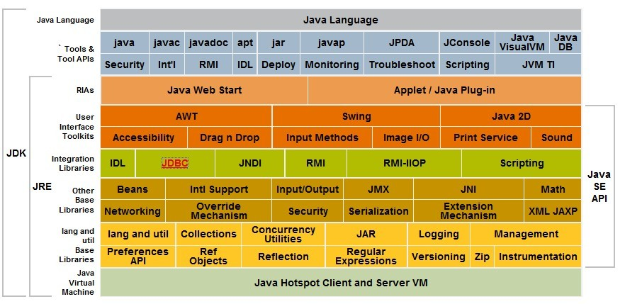

java 虚拟机
java 虚拟机
- 什么是JDK，JRE
- JDk与J2SE
- JDK版本J2SE与JAVA SE
- JAVA编译器
1.JDK与JRE区别与联系
简单来说JDK包含JRE和一系列JAVA开发和诊断的工具。JRE（Java Runtime Environment）仅包含运行 Java 程序的必需组件，
包括 Java 虚拟机以及 Java 核心类库(如图)

2.JDK与J2SE
了解这两个之前先了解一下J2SE,J2EE,J2ME。
- J2SE(Java 2 Standard Edition):java标准技术体系，它包含java的核心类库和数据库接口，网络编程等。
- J2EE(Java 2 Enterprise Edition):java企业版技术体系，它包含j2se的类外还包括servlet,jsp等企业级开发工具包。
- J2ME(Java 2 Micro Edition):它包含j2se的一些类库。主要用于嵌入式的开发。消费类电子产品。 简单的说,JDK 是一个核心库、开发工具、诊断工具的合集，而 Java SE 则是一个技术体系。两者之间没有必然的关系。 有的只是基于不同产品而诞生的技术种类。
3.JDK版本J2SE与JAVA SE
在java发布jdk版本1.6的时候取消了J2SE的这种叫法。进而产生了JAVA SE加上版本号的叫法更加明确java的版本号。 与这个类似的还有一个：JDK 1.7 与 JDK 7
4.JAVA编译器(程序从源代码到机器码的转化过程使用的编译工具)
4.1 前端解释器:sun(javac)和eclipse的ctj（四个阶段对代码进行解析说明）
- 1.这个阶段主要是对源代码进行扫描，分析代码的词法，和语法。生成对应的抽象关系
- 2.确定类之间的关联关系，用相关的符号来替代（这阶段不知道具体的类地址需要等到类加载时才能确定）
- 3.处理注解的过程
- 4.分析与字节码生成。到了这个阶段，JVM 便会根据上面几个阶段分析出来的结果，进行字节码的生成
4.2 后端处理器:jit，java解释器，aot
- java解释器主要是解释执行java字节码文件，
- jit是将字节码文件编译为机器码，交给机器执行
- aot是将源码直接编译为机器码。 解释执行：即将字节码文件解释后直接运行，而编译是将字节码转为机器码交给机器运行。
java 虚拟机
java虚拟机就是一种产品，他可以部署在任意一个操作系统上的机器上，通过javac工具将源代码编译为.class字节码文件， 然后通过jvm中的解析器解析为机器可以执行的机器码，最后程序运行。这就是java开发的优点用（跨平台，移植性强）。
- 原文作者：cherubr
- 原文链接：https://cherubr.github.io/post/java/jvm/
- 版权声明：本作品采用知识共享署名-非商业性使用-禁止演绎 4.0 国际许可协议进行许可，非商业转载请注明出处（作者，原文链接），商业转载请联系作者获得授权。